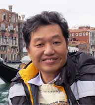

|  |
Lai Tuck Kee, MichaelDate of Birth: 12 September 1959 Nationality: Singaporean Employment Status: Retired |
Proficiency in Administration, Management, Planning, Projects Control, Resource Management
More than 30 years of working experience
Versed in Business and Technical Knowledge
Knowledgeable in Computing and Information Systems
Knowledgeable in Concepts of Designs
| Certification | School | Date |
|---|---|---|
| Masters Of Business Administration - Management Information Systems |
Oklahoma City University, Oklahoma City, OK, USA |
May 1992 |
| Bachelor of Science - Computer Science |
Oklahoma City University, Oklahoma City, OK, USA |
May 1991 |
| Advance Diploma in Computer Studies | Informatics Computer School, Singapore |
April 1988 |
| Diploma in Computer Studies | The National Centre For Information Systems, United Kingdoms |
April 1987 |
| The NCC Basic Certificate in System Analysis | The National Centre For Information Systems, United Kingdoms |
November 1987 |
| Certificate in Computer Programming and Information Processing |
City and Guilds of London Institute, United Kingdoms |
May/June 1987 |
| Standard Certificate Course in Graphic Design | Circle School of Design, Singapore |
September 1984 |
| Certificate in Aircraft Maintenance | Air Engineering Training Institute, Singapore |
October 1980 |
| Position | Organization | Period |
|---|---|---|
Constituency Manager
|
People's Association | September 1993 to May 2022 |
Aircraft Technician
|
Republic of Singapore Air Force | October 1976 to July 1988 |
| Complete Python Developer in 2023: Zero to Mastery ⭐⭐⭐⭐ | Tableau Training⭐⭐⭐⭐ |
| MySQL Essential Training⭐⭐⭐⭐ | C# Fundamentals⭐ |
| Web Developer Mastery⭐⭐⭐⭐⭐ |